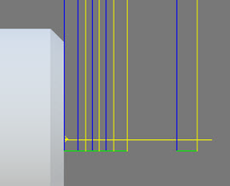
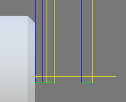

<div id="turning_doMultipleFinishingPasses"><p>複数の仕上げパスを指定できるようにします。<b>仕上げパス</b> をオンにして、<b>複数仕上げパス</b> をオフにした場合、1 つの仕上げパスのみが実行されます。</p>
<table class="tipTable" cellspacing="10">
<tr>
<td><center></center></td>
<td><center></center></td>
</tr><tr>
<td><center><p><b>複数仕上げパス(オン)</b></p></center></td>
<td><center><p><b>複数仕上げパス(オフ)</b></p></center></td>
</tr></table>
</div>